AftabPulse · Solar fleet monitoring
AftabPulse is an on-prem operations console for multi-site photovoltaic plants. It reads Huawei SmartLogger 3000 over Modbus, shows honest live power, and keeps operators on one Persian RTL screen — command center, plant HMI, and reports. This catalog is the public product window.
Leadership sees which city is producing, which logger is silent, and how much of nameplate is online — without opening a vendor portal.
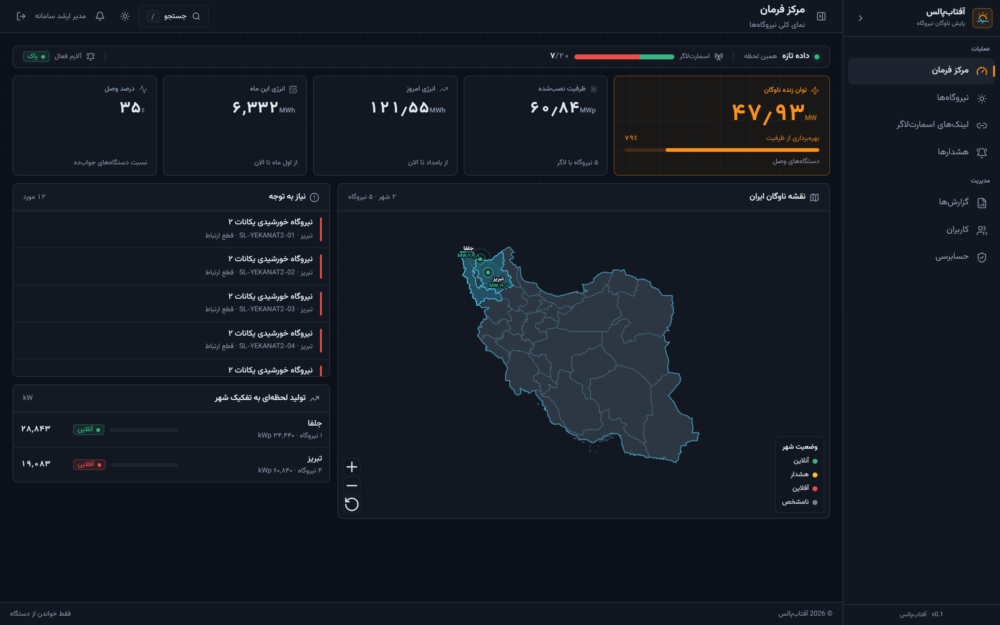
Live MW, today/month energy, logger availability, and an ISA-style attention list. Offline plants do not fake green on the map.
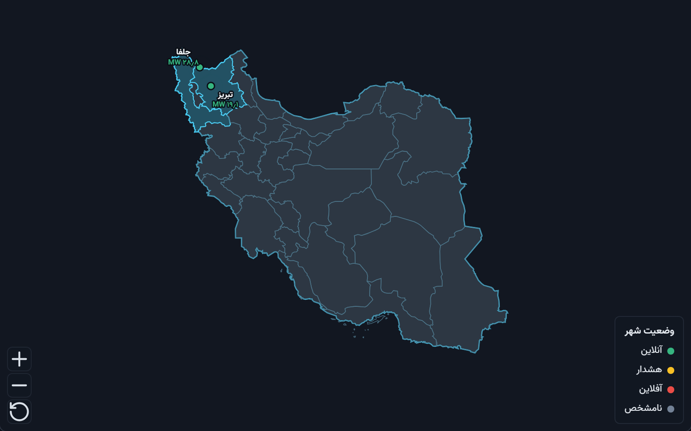
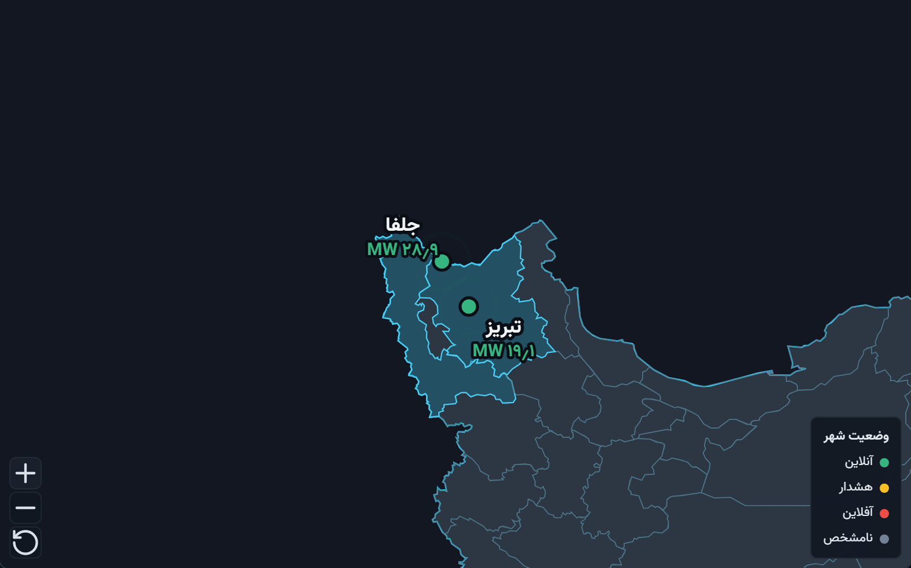
One pin per producing city. The green figure is live megawatts, not nameplate. Zoom keeps labels readable.
Each project sits under a city and district, with health, AC/DC power, and a one-click jump to the device web UI.
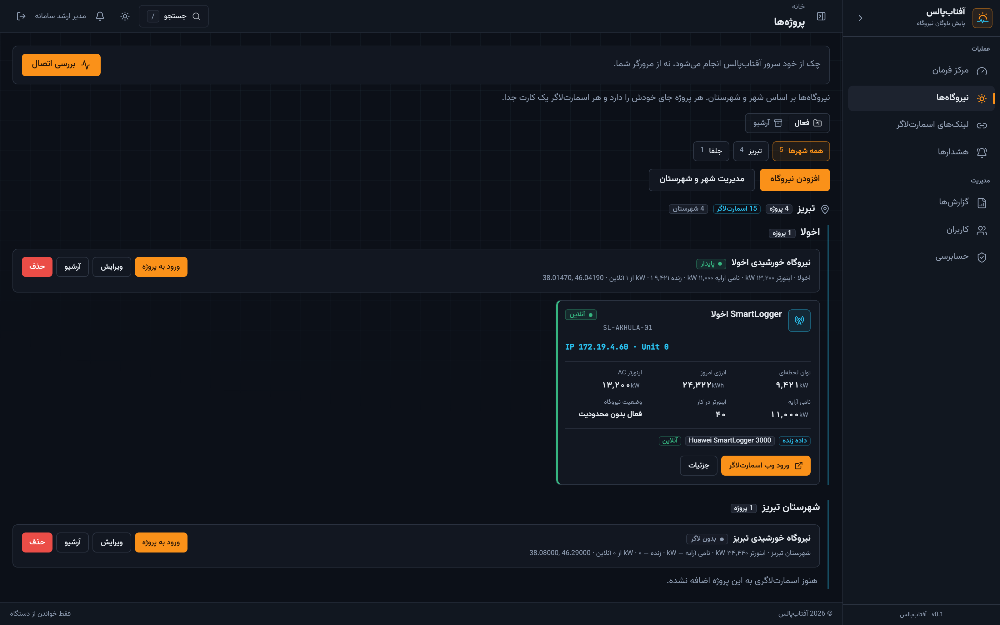
Akhula, Salimi, Amin, Yekanat 2, and Tabriz as first-class plants — not a single “site” blob.
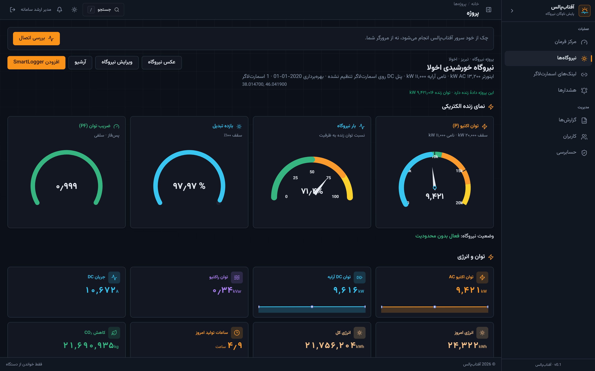
Active power, conversion efficiency, plant loading, and power factor as industrial gauges. Values come from Modbus registers on SmartLogger 3000.
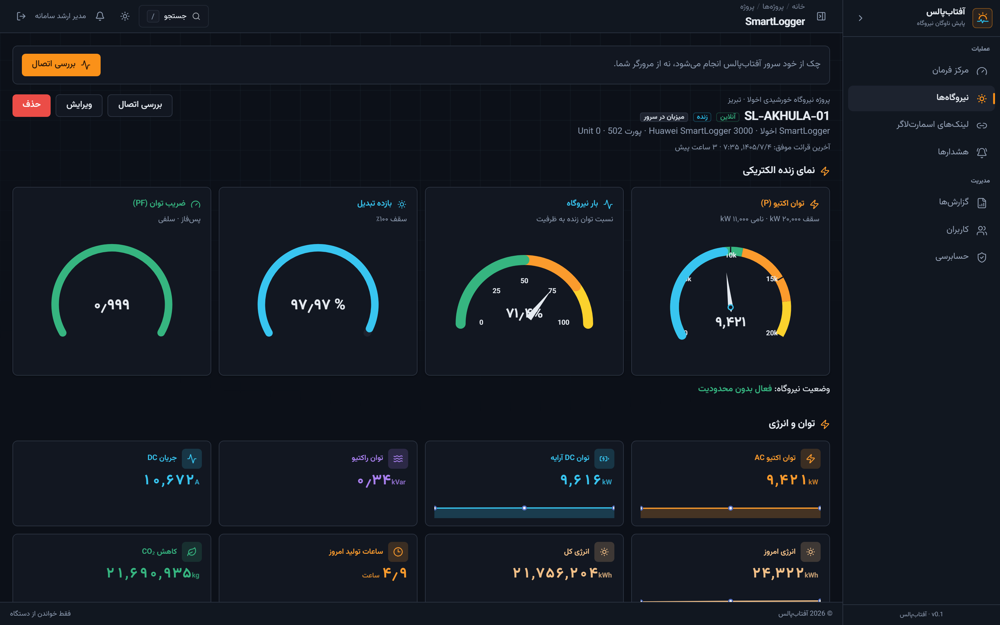
Read-only. If the logger is silent, the console says so — it does not replay yesterday as “live”.
The same honesty rules as the command center: live power is online loggers only. Stale megawatts stay out of the headline KPI.
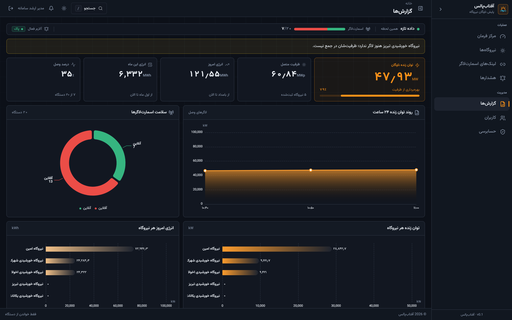
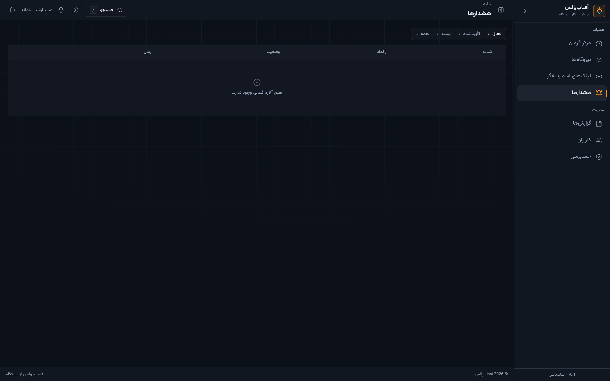
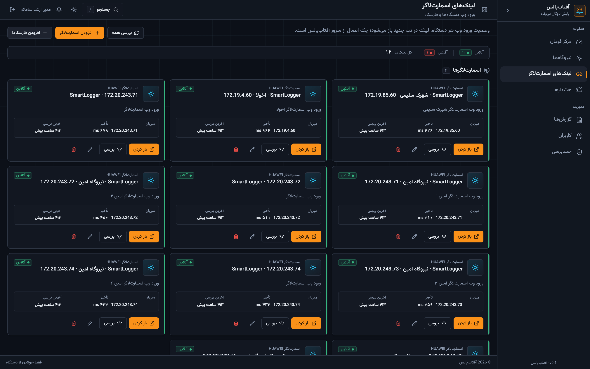
Alerts for comms loss; a link shelf for SmartLogger web and Farscada so operators do not hunt bookmarks.
Roles from viewer to super-admin. Every login and fleet change is written to an audit trail.
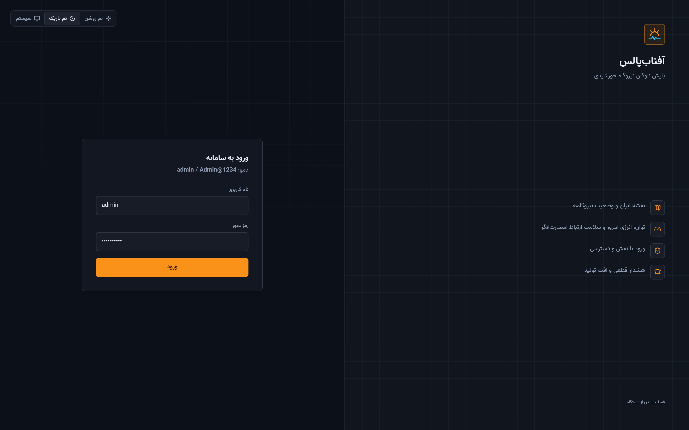
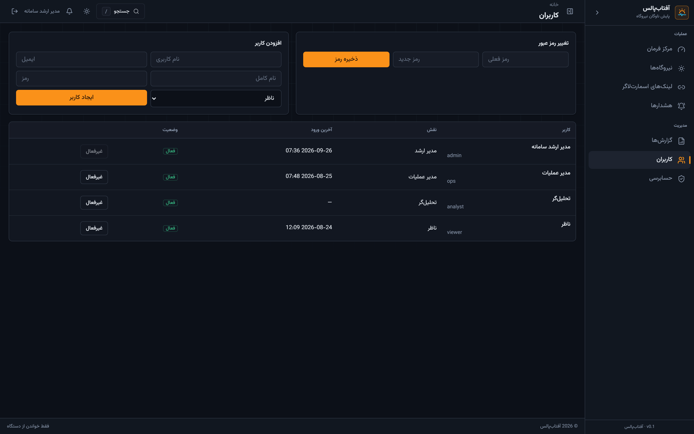
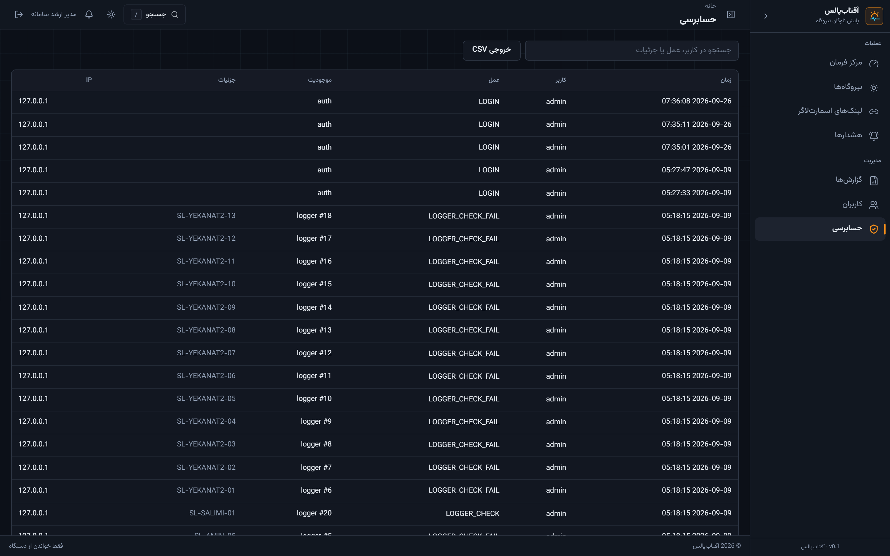
Built for Iranian solar operators who already own Huawei SmartLogger 3000 and need a Persian control room — not another English cloud portal.
Runs on the plant LAN, talks Modbus directly, and does not depend on the vendor cloud for the live MW figure.
Fleet map, city MW, honesty rules for stale telemetry, and RTL operations UX instead of a tag browser.
One console for Tabriz and Jolfa: availability, energy today, and which logger has been quiet.
سامانهٔ پایش ناوگان نیروگاه خورشیدی روی اسمارتلاگر هواوی. نقشهٔ ایران، توان زنده به مگاوات، صفحهٔ زندهٔ نیروگاه و گزارش روزانه — فقط خواندن از دستگاه، بدون نوشتن روی Modbus.
نقشه، KPI و فهرست توجه روی یک صفحه.
گیج توان، بازده، بار و ضریب توان از رجیستر واقعی.
روند ۲۴ ساعته، سلامت لاگر و رتبهٔ تولید.